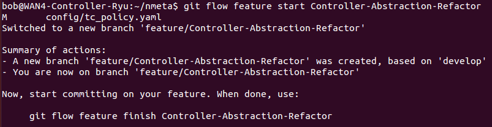
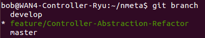
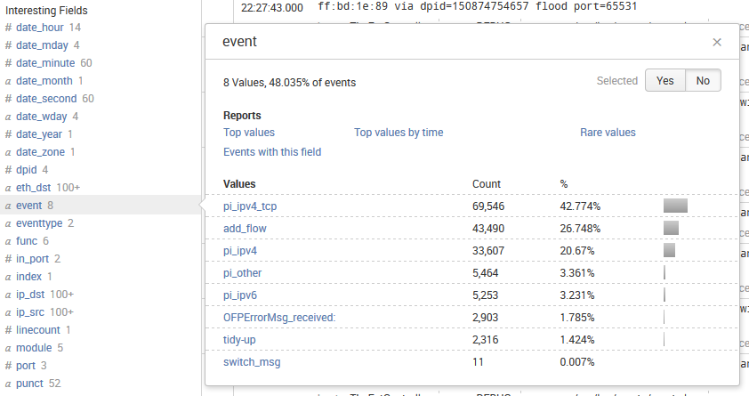

Contributing
Contents:
How to Contribute
Using Git Flow
Quality Code
Logging
Learning to Love Automated Testing
Merging to master Branch
Updating the Website
How To Contribute
Contributors are very welcome. There's certainly a lot of opportunity to make improvements! Here's how to contribute:
- All development is done on the Github repo
- Use the develop branch for development so that the master branch can be kept clean for downloads
- See Issues for inspiration as to what you can work on
Using Git Flow
Git flow provides branching strategy and release management over the top of git. To set git flow up, go to the nmeta directory and run:
git flow init
Accept the defaults and it is now set up with develop branch selected:

Start a Git Flow Feature
To start working on a new feature called FEATURE_NAME (substitute your own feature name) enter:
git flow feature start FEATURE_NAME
Example, working on a new feature called "Controller-Abstraction-Refactor":

Git now shows that the new branch is created and selected:

Use Git to commit code as per usual
Finish a Git Flow Feature
When finished with a feature, wrap things up with Git Flow:
git flow feature finish FEATURE_NAME
Logging
Good logging is important to code development and testing.
All modules initiate their own instance of logger during init, with configuration specified in config.yaml.
Log formats differ for console and syslog formats, but both automatically add the names of the module and function to the event.
Logging should use key=value format where appropriate to simplify analysis of logs with tools such as Splunk. Example screenshot of analysis of event=*:

TBD: List of keys and values to use in log messages
TBD: Logging code examples
Quality Code
Python code should (where practical) comply with PEP8 standards.
A good tool for assessing code quality is Pylint. Code doesn't need to be 10/10, there will be some things that should be taken under advisement. Use common sense...
Learning to Love Automated Testing
Automated tests are slowly being added into the codebase to both improve reliability of the system, and to speed up acceptance of code updates.
Tests use nose
Tests can be run by running this command in the nmeta directory:
nosetests -v
Merging to master branch
Here's a few checks to do before merging code updates to the master branch:
- Does the updated code get a reasonable score in pylint?
- Does the code pass automated testing?
- Has the code been run in a test environment?
- Have logs been examined to ensure no unexpected errors?
- Has performance data from test environment been examined to ensure no detrimental impact on performance?
- Are all logging levels in config.yaml set to 'INFO'?
Updating the Website
The website is in a separate orphan branch called gh-pages